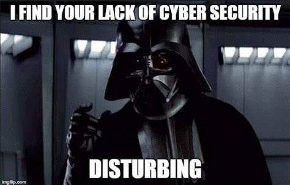

Be Vigilant!
Cyber attacks often prey on people's behaviors. Ensure you are clicking on authentic links and visiting reputable websites.
If you get an email request from Netflix to reset your password, do not click the link, rather go directly to their website.
We all love a funny meme or video. It is easy for these to have malicious links that redirect your browser to automatic downloads
that can infect your computer.
Use common sense!
Stronger Passwords! Two-Factor Authentication!
Ensure your passwords are unique and consist of letters, numbers and symbols. Do not use the same password for everything,
no matter how tempting it may be! Update your passwords consistently. DO NOT click "Remind Me Later"!
Two-Factor Authentication (2FA) is an additional security measure that requires more than just a user name and password
to login. This can be a unique code that is emailed, phoned, or text to you. It can also be a biometric, such as your fingerprint.
No matter how inconvenient it may be, this is a very effective tool and should be used whenever offered.
Always Update Your Software!
It is important to update your software regularly, preferably as soon as updates become available. This goes for all of your
electronic devices: phones, tablets, computers, and smart devices.
Software updates not only provide new features, but almost certainly contain security fixes to help keep you better protected.
